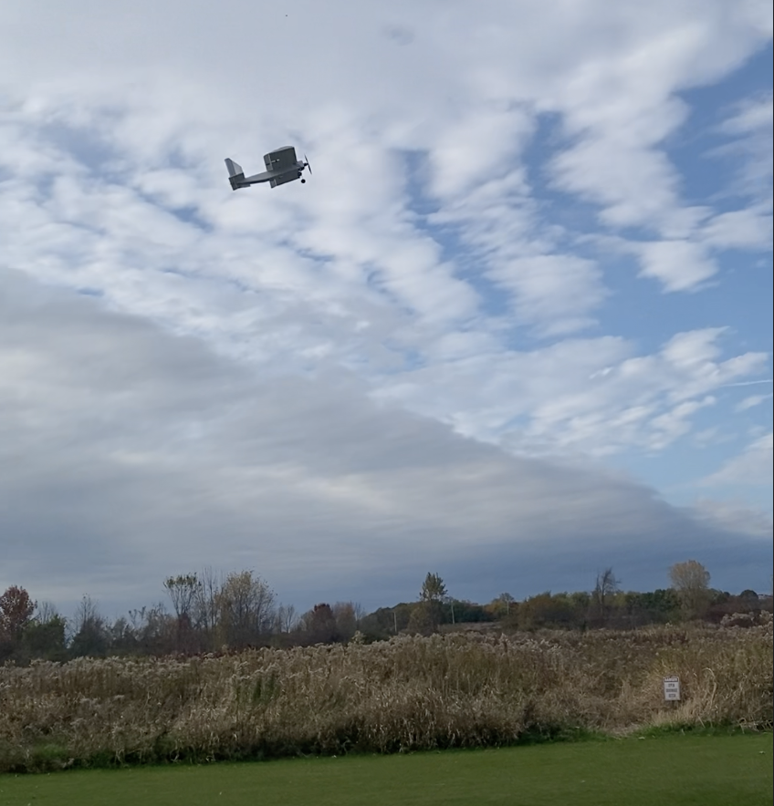
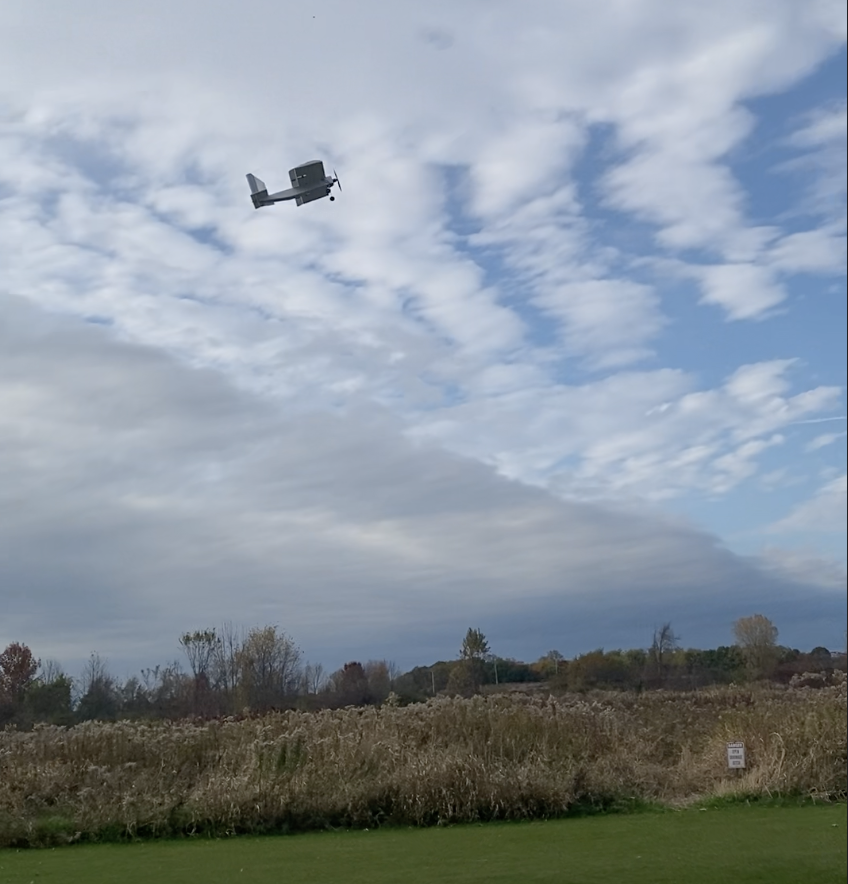

Aeromodeling at RPI
At RPI, I joined the Design Build Fly (DBF) club and its offshoot, the Rensselaer Aeromodeling Club. I joined because it had a similar vibe to the robotics club I participated in during high school, with a yearly competition to design a plane optimized to complete specific tasks under a defined set of constraints. Through DBF, I discovered its offshoot club, Rensselaer Aeromodeling, which was created to allow DBF members to practice building and flying planes of their own. Through this club, I built my own plane. While it was fairly simple, it was very fun to build and fly.
CAD
To prepare for building I desinged a simple frame out of quarter inch foam board and 3D print PLA for the landing gear and motor mount.
3d Print


Building and flying
Using this Cad model as a refernce I Built and assembled the plane, When we went to fly it that saturday, some of the more experienced members of Aeromodeling told me that the Center of gravity was to far back for it to fly well, so we temperaraly fixed this by stuffing some rocks into the front of the plane to balence it out and move the center of gravity to a more reasonable location. Despite this the plane flew! not very well but it was very cool to see something I made fly like that.
 

Reflection
After the first flight, I went back to the lab and moved the wing back on the fuselage to fix the center of mass issues. We haven’t been able to fly since then due to winter and poor weather, but I hope to fly it again and potentially create a new, better plane that is more well thought out and built with more guidance from my fellow club members.
DBF has been very fun and beneficial to my time at RPI. Although I am the only Electrical Engineering major in the club, I have found very useful advice for both life and classes at RPI, and it is a great community of dedicated and friendly people that I plan on staying a part of throughout my RPI career.